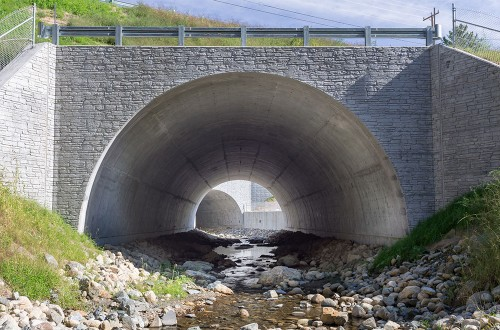

This section discusses vital parts of our projects.
Projects are a key of what VTrans does. Ensuring they are on track is what we do. To see all project data, click the button below.
 The Ryegate Culvert Project will replace the existing culvert carrying Manchester Brook under US 5 and the Washington County Railroad, which runs parallel I-91. The brook flows approximately 150 feet through the 50-foot high US 5 embankment and 185 feet through the 60-foot high Railroad embankment. The original culverts were constructed around 1930 and 1914, respectively, and are hydraulically deficient. The new culvert is being built along a slightly different alignment and consists of two separate structures: one for US 5 and another for the Railroad. The project maintains traffic using temporary bridges, a temporary earth retaining system and dewatering system, construction of a permanent cast-in-place concrete arch culvert, and a new stream channel to meet hydraulic and Aquatic Organism Passage (AOP) requirements. Construction began in 2015 and is expected to be completed in summer 2016.
The Ryegate Culvert Project will replace the existing culvert carrying Manchester Brook under US 5 and the Washington County Railroad. The Railroad embankment 185 feet long and 60 feet high. Construction is expected to be completed in summer 2016.
Last updated 3 mins ago
The number of projects undertaken by VTrans is continually rising. VTrans becoming more and more and more productive and accomplishing more each season.
Last updated 12/15/2016
The Department of Motor Vehicles (DMV) is responsible for issuing driver licenses, permits, motor vehicle registrations (including snowmobile and motorboat registrations), driver license suspensions and reinstatements, enforcement of motor-vehiclerelated laws, and collecting motor fuel revenue for the state of Vermont. The department also manages several safety programs, including vehicle inspections, motor carrier safety, school bus safety and those related to motorcycle training. The Vermont DMV serves a resident population of over 626,000, as well as a significant number of nonresidents.
| License Fees | $9,171,789.07 |
| Registration Fees | $53,247,346.19 |
| Gas Tax and Clean Up ($0.121/gal.) | $40,655,867.48 |
| 2013 Motor Fuel Assessment Fee | $38,975,362.62 |
| Gas Infrastructure Assessment Fee | $17,237,352.02 |
| Sales Tax (6%) | $1,192,688.73 |
| Purchase and Use Tax (6%) | $68,458,579.12 |
| Diesel Tax ($0.28/gal.) | $18,142,769.01 |
| Diesel Infrastructure Assessment Fee | $1,877,279.02 |
| Trucks up to 6,099 lbs. | $15,688,139.44 |
| Trucks up to 25,999 lbs. | $7,808,734.75 |
| IRP from other states | $186,227.26 |
| IRP In-State | $4,593,822.46 |
| Clean Air Fund | $616,826.50 |
| Conservation Plates | $170,645.00 |
| IFTA from other states | $1,258,976.47 |
| IFTA Infrastructure Assessment | $209,540.86 |
| Title Fees | $5,833,731.81 |
| Inspection Fees | $2,927,155.23 |
| Driving Records | $2,356,948.00 |
| Oversize Permits | $2,944,803.40 |
| Miscellaneous | $15,019,038.12 |
| Total | $308,573,622.56 |
|---|
Last updated 3 mins ago
The Vermont Department of Motor Vehicles (DMV) serves a resident population of over 626,000, as well as a significant number of nonresidents.
Total Revenue: $308,573,622.56
Last updated 3 mins ago